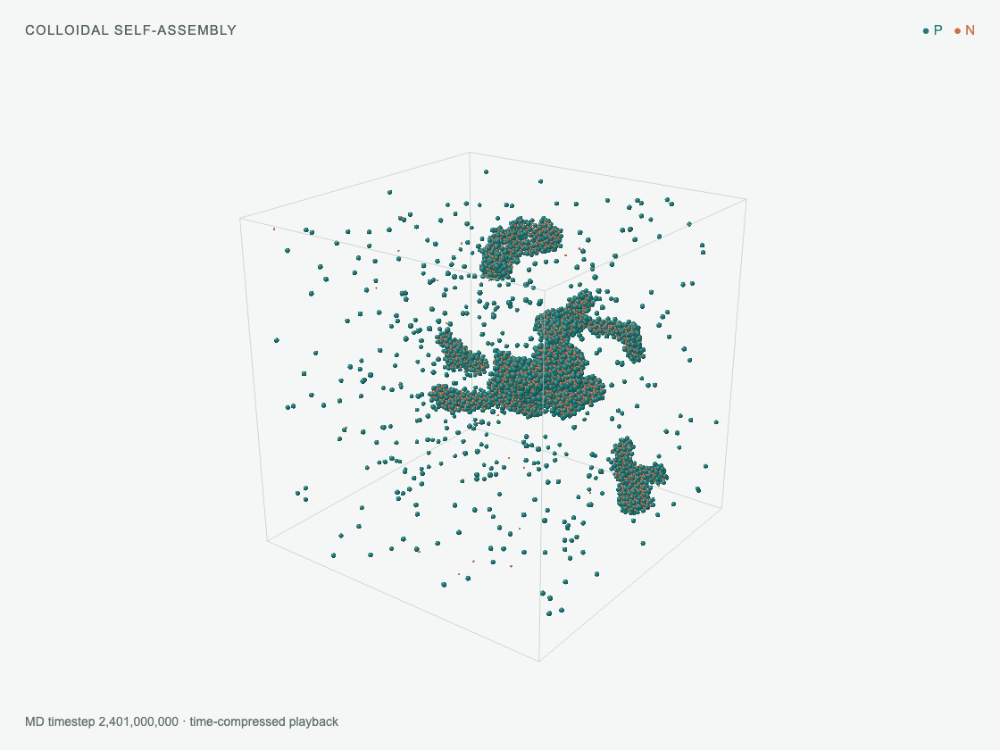
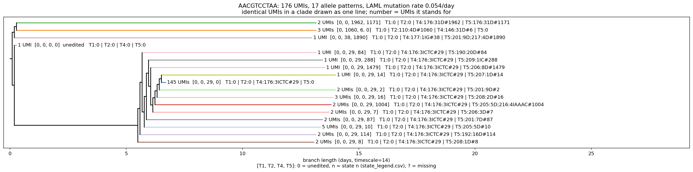
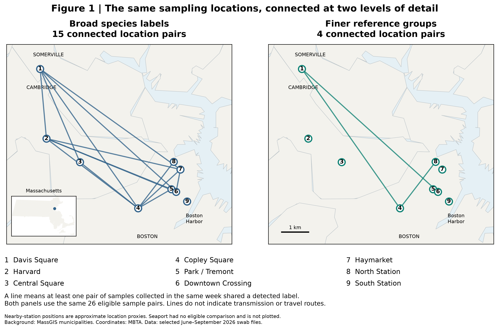
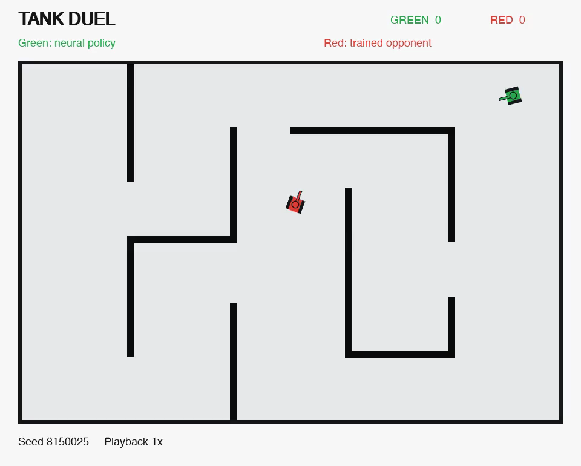

Detecting and identifying colloidal crystals
A pipeline for separating structural domains, identifying crystal prototypes, and flagging unfamiliar structures in molecular-dynamics simulations.
I’m a rising junior at Yale University studying Molecular Biophysics & Biochemistry and Applied Mathematics. I’m interested in computational chemistry, computational biology, and machine learning.
During summer 2026, I worked as a software engineering intern at OnyxPoint Global Management and conducted research through the NYU Simons Center for Computational Physical Chemistry REU in the Hocky Group. At Yale, I’m part of the Kueh Lab, which studies the molecular circuits that shape immune-cell decisions.


A pipeline for separating structural domains, identifying crystal prototypes, and flagging unfamiliar structures in molecular-dynamics simulations.

Reconstructing lineage trees from CRISPR editing patterns in RNA-sequencing data to infer relationships between cells.

Exploring what broad virus labels hide in 48 public pooled-swab sequence files.
Rhinovirus surveillance in Boston
I analyzed 48 public pooled-swab sequence files to ask what broad virus labels hide. Among 15 same-week pairs from different locations with matching species labels, 14 had different sets of finer genetic groups.
At Downtown Crossing, two files from the same day both contained Rhinovirus A, but supported different reference groups. Repeated detections can reinforce a result while also revealing something new.
Exploratory, AI-assisted analysis. Reference groups are provisional; shared labels do not establish transmission or identify the best place to sample.

A neural agent that learns to navigate, aim, dodge, and fire around ricocheting bullets.
Tank Duel
I built a tank-combat environment and trained a neural agent to navigate, aim, dodge, and fire around ricocheting bullets. Demonstrations initialize the policy; PPO refines it, with physics-based safety masks to reduce self-hits.
The green tank is the latest selected agent, facing an earlier trained agent in a maze. This is a recorded match, played at normal speed (1×).
Fixed-map benchmarks against scripted and frozen neural opponents; not a human win rate or a guarantee of safety.
Starting on opposite sides of a wall, both agents move toward an opening and exchange fire. Each fires three shots; green wins without a self-hit. Use the video controls to pause or replay.

Comparing frozen embeddings and partial fine-tuning for eight blood-cell classes.
BioMedCLIP × BloodMNIST
I compared zero-shot predictions, a classifier trained on frozen image embeddings, and partial fine-tuning of BioMedCLIP. Updating the final visual transformer block, normalization, projection, and classifier improved performance on eight blood-cell classes.
Same test set. More useful representations.
Test accuracy · 0–100% · 3,421 images
Saved results from one completed run. The zero-shot baseline was evaluated on validation data, so it is not included in this test-set comparison.
Dataset: BloodMNIST / MedMNIST. An image-classification benchmark, not a clinical application.
Machine Learning Through Food
Students turn their own taste ratings into a dataset, then train models to predict enjoyment—from linear regression to a small neural network.
Inside the class E5492
I keep notes on ideas, papers, and questions that I want to return to.